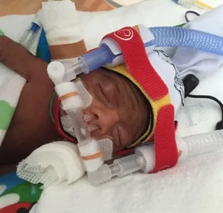

Expanded Nursing Uganda Explanation
Apnea should be understood beyond a short definition. Link the concept to patient history, focused assessment, common risks, nursing priorities, documentation and evaluation of outcomes.
01 APNEA
It is often associated with Bradycardia and cyanosis . Bradycardia (below 80-100 beats /minute) appears 30 seconds after cessation of respiration.
Apnea is more common in preterm infants , and in this case, it is referred to as Apnea of prematurity and requires a specific assessment and treatment. It is rare among full-term healthy infants and if present, usually indicates an underlying pathology.
Apnea is a disorder of respiratory control and may be: obstructive , central , or mixed .
02 Types of Apnea
- Central Apnea : This occurs due to a depressed respiratory center. This means it is caused by a failure of the brain to send the necessary signals to the muscles involved in breathing.
- Obstructive Apnea : Occurs due to obstruction of the airway. This type is caused by a blockage of the airway, often due to the soft tissues of the throat collapsing during sleep.
- Mixed Apnea : This type is a combination of both central and obstructive apnea.
NB: Short episodes of apnea are usually central whereas prolonged ones are often mixed.
03 Causes of Apnea
- Immature Respiratory System : Premature babies have underdeveloped respiratory systems, making them more susceptible to apnea.
- Brain Immaturity: The brains of premature babies are still developing, and they may not be able to regulate breathing as effectively as full-term babies.
- Neurological Problems : Some premature babies may have neurological problems that affect their breathing.
- Systemic disorders : e.g
- Cardiovascular : Anemia, hypo / hypertension, patent ductus arteriosus,coarctation of the aorta (conditions that impair oxygenation)
- Central nervous system : Intraventricular haemorrhage, intracranial haemorrhage, brainstem infarction or anomalies, birth trauma, congenital malformations (conditions that will increase intracranial pressure)
- Respiratory : Pneumonia, intrinsic / extrinsic mass or lesions causing airway obstruction, upper airway collapse, atelectasis, respiratory distress syndrome, meconium aspiration, pulmonary haemorrhage (conditions that cause impairment of ventilation and oxygenation)
- Gastrointestinal : Oral feeding, bowel movement, gastro esophageal reflux, necrotizing enterocolitis
- Metabolic : Hypoglycemia, hypocalcaemia, hypo / hypernatraemia, hyperammonemia, low organic acids, hypo / hyperthermia
- Infection : Respiratory infections can worsen apnea in premature babies e.g meningitis or encephalitis.
- Medications : Certain medications used in premature babies can also cause apnea. Maternal prenatal exposure drugs through transplacental transfer and postnatal exposure e.g. opiates, high levels of phenobarbitone, or other sedatives, general anesthetic.
- Pain : Acute and chronic.
- Head and neck poorly positioned
- Toxin exposure
04 Clinical features of apnea
- Episodes of no breathing : This is the most obvious sign of apnea.
- Decreased heart rate( Bradycardia): Apnea can also cause a decrease in heart rate.
- Change in skin color( Cyanosis ): The baby’s skin may turn blue or pale during an episode of apnea.
- Irritability : Some babies with AOP may be irritable or fussy.
- Poor feeding : Apnea can make it difficult for babies to feed.
Management of Apnea
Aims of Management
- Maintain Adequate Oxygenation : Ensure the infant receives enough oxygen to prevent hypoxemia (low blood oxygen levels) and its associated complications.
- Support Respiratory Function : Provide assistance to the infant’s respiratory system to maintain adequate breathing and prevent episodes of apnea.
- Prevent Complications : Minimize the risk of potential complications associated with AOP, such as brain damage, developmental delays, and long-term respiratory issues.
Assessment
- Check the infant for signs of breathing and skin colour, if apnoeic, pale, and cyanotic or has Bradycardia give tactile stimulation
- Find out about the frequency and duration of episodes, level of hypoxia and degree of stimulation needed.
Note: If the infant doesn’t respond, use bag and mask ventilation along with suctioning and airway positioning
- All babies born before 34 weeks of pregnancy (premature babies) should have their heart rate, breathing, and oxygen levels closely watched for at least the first week of their life. This monitoring continues until they have gone a full week without any pauses in breathing (apnea).
- Above 34 weeks gestation neonates only need to be monitored if they are unstable.
Acute management
- Positioning : Ensure the neonate’s head and neck are positioned correctly (head and neck in neutral position) to maintain a patent airway.
- Tactile stimulation : Gentle rubbing of soles of feet or chest wall is usually all that is required for episodes that are mild and intermittent.
- Clear airway : Suction mouth and nostrils.
- Provision of positive pressure ventilation : May be required until spontaneous respirations resume. If positive pressure ventilation is required to treat apneic episodes mechanical ventilation should be considered.
- Continuous Positive Airway Pressure (CPAP); is effective in treating both mixed and obstructive apnea but not central. It’s most commonly delivered by nasal prongs or endotracheal tube. It works by improving lung volume and reduces inspiratory duration hence preventing airway collapse. It also increases stabilization of the chest wall musculature
Ongoing management
- Pulse oximeter. Detects changes in the heart rate, respiratory rate and oxygen saturation due to apnoeic episodes.
- Identify cause: If apnea is not physiologic, investigate to identify underlying cause and treat appropriately.
- Apnea monitor : This detects abdominal wall movement and may alarm falsely with normal periodic breathing.
- Caffeine citrate : it can be given orally or intravenously and is usually routinely given to neonates <34 weeks gestation. It acts as a smooth muscle relaxant and a cardiac muscle and central nervous system stimulant.
- High flow nasal Cannula (HFNC) : This is especially effective with mixed and obstructive apneas. Often used when treatment with caffeine has failed.
- Mechanical ventilation : This is used when caffeine and HFNC and CPAP have been tried and there are still significant apneas. It is effective in all types of apnea.
Medical Management
- Methylxanthines are a class of medications commonly used to manage apnea. These include caffeine, theophylline, and theobromine. They work by blocking adenosine receptors. Adenosine naturally inhibits respiratory drive, but methylxanthines counteract this effect, stimulating respiratory neurons and enhancing ventilation.
Two commonly used methylxanthines are:
- Caffeine Citrate : Due to its longer half-life and lower toxicity, caffeine citrate is often preferred for routine management of AOP, especially in premature infants.
- Loading Dose : 20 mg/kg, administered either intravenously (IV) or orally (P.O.).
- Maintenance Dose : 5 mg/kg/day.
- Theophylline : Theophylline acts as a bronchodilator, making it particularly beneficial for neonates with bronchopulmonary dysplasia (BPD) as it addresses both apnea and bronchospasm. Loading Dose: 6 mg/kg/dose, administered IV or P.O.
- Maintenance Dose : 6 mg/kg/day, divided into six hourly doses.
Documentation and Family-Centered Care
- Documentation : Ensure all apnea episodes are well documented, including the interventions required to correct them, the frequency of episodes, and their duration.
- Parental Education:
- Explain the cause of apnea and the rationale behind treatment approaches (e.g., antibiotics for infection).
- Reassure parents that AOP is a common occurrence in premature infants and will typically resolve by 34 weeks gestation.
- Clearly explain all interventions, such as caffeine administration, continuous positive airway pressure (CPAP), or mechanical ventilation, and emphasize their importance in managing the condition.
05 Nursing care plan for a pediatric patient with Apnea
- Assessment Nursing Diagnosis Goals/Expected Outcomes Interventions Rationale Evaluation
- 1. Child presents with episodes of apnea lasting more than 20 seconds, cyanosis, and bradycardia (heart rate < 100 bpm). Ineffective Breathing Pattern related to immature respiratory control as evidenced by episodes of apnea, cyanosis, and bradycardia. The child will maintain effective breathing patterns with no episodes of apnea, and oxygen saturation will remain above 95%. – Continuously monitor the child’s respiratory rate, effort, and oxygen saturation using a cardiorespiratory monitor. – Position the child in a supine or side-lying position with the head slightly elevated to facilitate airway patency. – Administer oxygen as prescribed to maintain adequate oxygenation during and after apneic episodes. – Stimulate the child gently (e.g., rub the back or flick the soles) during apneic episodes to prompt breathing. – Prepare for possible resuscitation if apnea persists despite stimulation. Continuous monitoring helps detect apneic episodes and guide interventions. Proper positioning promotes airway patency and reduces the risk of obstructive apnea. Administering oxygen improves oxygenation during apneic episodes. Gentle stimulation often restarts breathing in infants with apnea. Resuscitation may be necessary in severe cases to restore breathing. The child maintains a normal breathing pattern, with no further episodes of apnea, and oxygen saturation remains within the target range.
- 2. Child exhibits signs of fatigue and decreased responsiveness between apneic episodes. Activity Intolerance related to recurrent apneic episodes as evidenced by fatigue and decreased responsiveness. The child will exhibit improved activity tolerance with increased periods of alertness and responsiveness. – Allow for rest periods between feedings and activities to reduce fatigue. – Monitor the child’s energy levels and responsiveness closely, adjusting activity levels as needed. – Educate parents on the importance of providing a calm, low-stimulation environment to promote rest. – Provide small, frequent feedings to minimize energy expenditure during feeding. Rest periods help conserve the child’s energy and prevent excessive fatigue. Close monitoring allows for timely adjustments to activity levels based on the child’s energy reserves. A calm environment reduces stress and supports the child’s recovery. Small, frequent feedings reduce the effort required during feeding, conserving energy. The child demonstrates improved activity tolerance, with increased alertness and responsiveness between rest periods.
- 3. Parents express anxiety about the child’s condition and fear of apneic episodes occurring at home. Anxiety related to fear of apneic episodes and uncertainty about the child’s condition as evidenced by parental verbalization of concern. The parents will verbalize understanding of the child’s condition and demonstrate confidence in managing apneic episodes at home. – Provide clear, concise information to the parents about apnea, including causes, signs, and interventions. – Teach parents how to monitor the child’s breathing and how to respond to apneic episodes at home, including the use of home monitoring equipment if prescribed. – Offer emotional support and reassurance, acknowledging the parents’ feelings and concerns. – Encourage parents to ask questions and participate in the child’s care to increase their confidence. Educating parents helps reduce anxiety by providing them with the knowledge and skills needed to manage the child’s condition. Hands-on teaching and use of monitoring equipment empower parents to respond effectively to apneic episodes. Emotional support reassures parents and validates their concerns. Involving parents in care increases their confidence and sense of control. The parents verbalize understanding of the child’s condition, demonstrate correct management of apneic episodes, and express increased confidence in caring for their child at home.
- 4. Child is at risk for impaired gas exchange due to recurrent apneic episodes. Risk for Impaired Gas Exchange related to apneic episodes and immature respiratory control. The child will maintain adequate gas exchange as evidenced by normal oxygen saturation levels and absence of cyanosis. – Monitor oxygen saturation and signs of respiratory distress continuously, intervening promptly during apneic episodes. – Administer supplemental oxygen as needed to maintain target oxygen saturation levels. – Provide continuous positive airway pressure (CPAP) or mechanical ventilation if prescribed to support the child’s respiratory efforts. – Monitor arterial blood gases (ABGs) or transcutaneous CO2 levels if indicated to assess gas exchange. Continuous monitoring allows for prompt intervention during episodes of impaired gas exchange. Supplemental oxygen supports adequate oxygenation during apneic episodes. CPAP or mechanical ventilation provides respiratory support in cases of severe or persistent apnea. Monitoring ABGs or CO2 levels provides information on the child’s gas exchange status, guiding treatment.
- 5. Child is at risk for infection due to immature immune system and potential for aspiration during apneic episodes. Risk for Infection related to immature immune system and potential aspiration. The child will remain free from infection as evidenced by normal temperature, white blood cell count, and absence of signs of infection. – Practice strict hand hygiene and aseptic technique during all care and procedures. – Monitor for signs of infection, including fever, increased WBC count, and changes in respiratory status. – Provide prophylactic antibiotics if prescribed, especially in cases of suspected aspiration. – Educate parents on infection prevention measures, including proper feeding techniques to minimize the risk of aspiration. Strict hand hygiene and aseptic technique reduce the risk of introducing pathogens. Early detection and treatment of infection are crucial to prevent complications. Prophylactic antibiotics may reduce the risk of infection following aspiration events. Parental education ensures adherence to infection prevention practices at home.
06 Nursing Uganda Clinical Lens
Use Apnea as a practical nursing topic, not only a memorized definition. Prioritize airway, breathing, circulation, pain, asepsis, wound healing and early complication detection.
- What to understand first: define apnea, identify the normal or expected pattern, then explain what changes when the patient is unwell.
- Why it matters in care: the nurse must recognize risk early, explain findings clearly, document accurately and know when to escalate.
- How to revise it: connect each point to assessment, nursing diagnosis or care problem, intervention, rationale and evaluation.
07 Assessment Guide
- Vital signs, pain, bleeding, perfusion, level of consciousness and injury pattern.
- Wound appearance, drainage, odour, swelling, temperature and surrounding skin.
- Fluid balance, mobility, nutrition, surgical site risk and ordered investigations.
08 Nursing Priorities, Rationales and Outcomes
- Stabilize urgent problems first, then prepare for investigations or theatre care.
- Maintain aseptic technique, pain control, wound care and documentation.
- Prevent shock, infection, pressure injury, deep vein thrombosis and delayed healing.
The rationale for these priorities is patient safety: nursing actions should prevent deterioration, reduce discomfort, support recovery and create clear evidence for the next caregiver.
- Expected outcome: The patient remains stable, wound healing progresses, pain is controlled and complications are recognized early.
09 Patient Teaching and Revision Check
- Explain apnea in simple language the patient or caregiver can repeat back.
- Teach warning signs, medicine or follow-up instructions, hygiene or lifestyle points where relevant.
- For exams, prepare a short answer using: definition, causes or risk factors, signs, assessment, management, complications and prevention.
- For ward practice, document baseline findings, actions taken, patient response and the plan for review.
Illustrations and Diagrams (8)



Related Video Lectures
Watch nursing lecture videos on YouTube for this topic. Opens in a new tab.
Watch on YouTubeExternal link: YouTube may use its own cookies and terms. Nursing Uganda is not affiliated with YouTube.